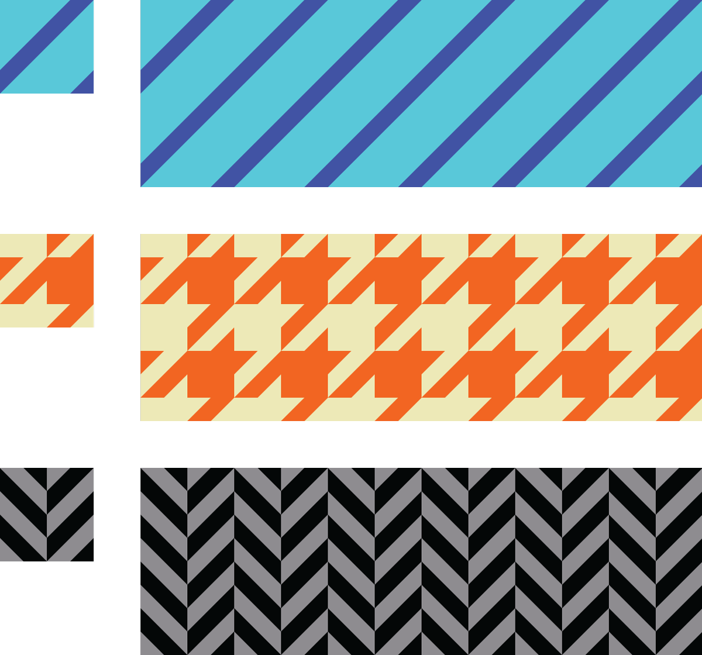
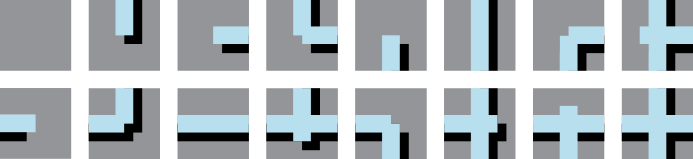
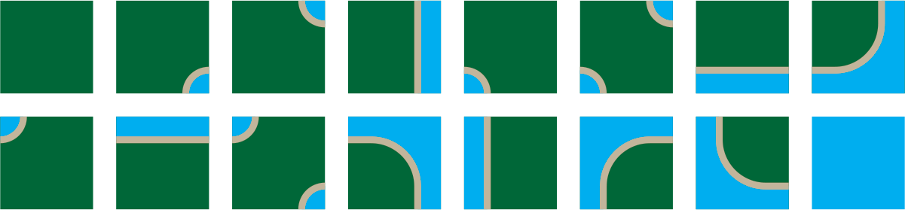

Tile Kit Workshop
Repeating Tiles
Top matches bottom, left matches right.

Repeating Tiles with Alternates
Top matches bottom, left matches right. Alternate tiles used to break up pattern.

Rotatable Tiles
Top matches bottom, left matches right. Rotated tiles still match up.

See also: Truchet Tiles
Edge-matched Tile Sets
A set of tiles where the sides of each tile match up to the opposing side of another tile in the set.

One way to create a tile set is to consider each edge to be one of two states: occupied or empty. Since there are 4 sides, and each has two states, there will be 4^2 = 16 tiles in the set.

Depending on the design, some of these tiles may be rotations of other tiles.

In those cases, a smaller set will still work.

With a set of tiles, you can start creating forms.

A wide variety of looks can be created.

See also: Wang Tiles
Corner-matched Tile Sets
You can also create a set by considering the corners to be empty or occupied.


Consider
- How does this method impact design rhythm, complexity, concord, similarity, repetition?
- How are these design different from/similar to patterns?
- What kind of forms does this method lead to naturally? How can this be embraced/avoided?
- What are the essential elements of this method?
- How does a tile kit like this compare to building kits like lego blocks.
- How does a tile kit compare to a font?
- How does working within constraints impact creativity?
- What are the advantages/disadvantaged to working by hand?
- How would variations on the tile work? Staggered? Triangles? Rectangles?
- What if each edge/corner had three states instead of two?
- How could these tiles work in 3 dimensions?
Activity
Create and edge-matched tile kit. Use markers on paper squares. Make up a design that allows rotation,this is faster to draw out than a full set. Once you have made your kit, use it to create a variety of forms. Try building out each letter in the alphabet.
The image below shows which tiles you need to make, and how many to many to make of each.